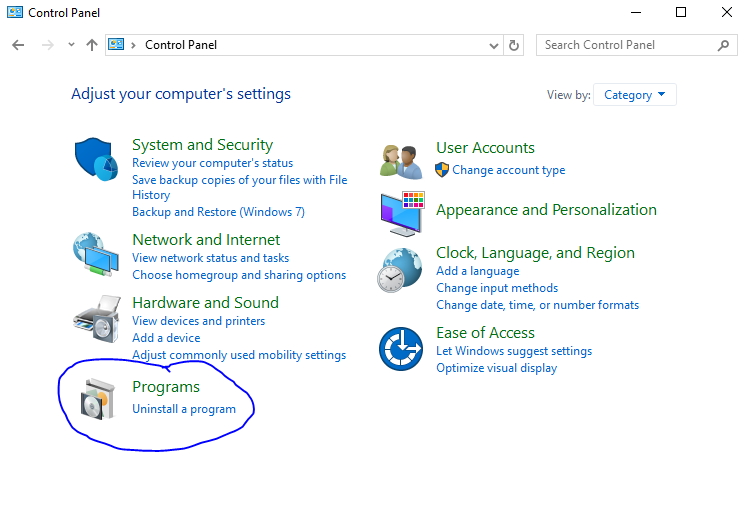
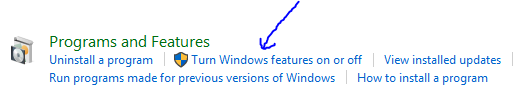
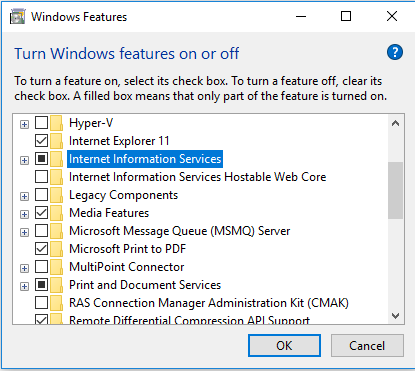
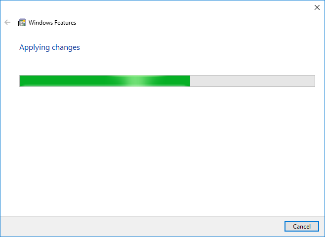
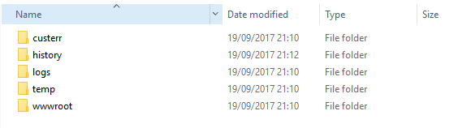
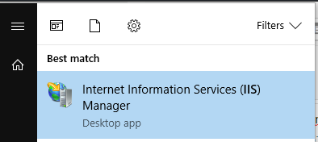
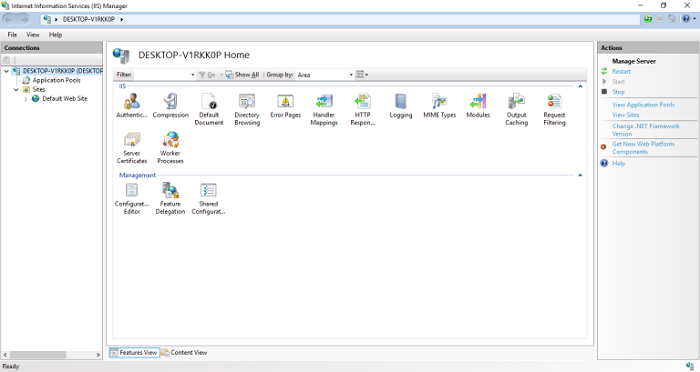

Web Server dibuat oleh Tim Berners-Lee pada tahun 1989, dia bekerja pada perusahaan CERN (European Organization for Nuclear Research).
Tujuan awal diciptakannya Web Server yaitu untuk mempermudah pertukaran informasi antara para peneliti pada saat itu.
Satu tahun berlalu, Tim Berners-Lee menghasilkan dua buah program komputer, yang pertama yaitu sebuah sistem yang diberi nama WWW atau WorldWideWeb,
dan yang kedua yaitu Web Server pertama yang diberi nama CERN.
HTTP merupakan protocol komunikasi data pada jaringan world wide web /www dan menjadi pengenal situs melalui url yang dicari pada browser. sedangkan https merupakan situs http yang ditambah sertifikat ssl.
kesimpulanya adalah website yang not secure itu merupakan situs yang masih belum berpindah dari http menjadi https dan efek yang terlihat pada https adalah munculnya gembok hijau pada alamat url kalian sedangkan yang
http munculnya gembok yang dilarang. jadi kalian sudah tahu kan perbedaan http dengan https
Apache
untuk membuat sebuah hubungan antara server dan browser (crome, opera, safari )milik pengunjung web sambil mengirimkan file bolak-balik (antara user-server). jika menggunakan ini
anda harus tidak membayar dan untuk pemula ini mungkin bagi anda.
Apache Tomcat
Server web apache tomcat merupakan aplikasi open source dan juga merupakan suatu wadah web aplikasi berbasis java yang dipakai
untuk menjalankan servlet dan JSP (Java Server Pages) disebuah aplikasi web.
WebServer IIS
sering di pakai pada OS Windows (Windows 2000 dan Windows 2008) kelebihan dari webserver ini adalah
dukungan komponen protokol jaringan DNS, TCIP/IP dan software yang dipakai untuk membuat situs web. kelebihan IIS bisa diakses penuh
di sistem operasi Windows dan mendukung platform .NET.
Server NGINX
nama dari sebuah webserver open source yang dapat digunakan oleh siapapun secara bebas dan gratis.Keunggulan Nginx yaitu
bisa menangani website dengan traffic tinggi jika dibandingkan dengan apache, maka kapabilitas NginX lebih baik dibanding apache server.
Lighttpd
Lighttpd adalah server web yang dirancang agar cepat, aman, fleksibel, dan sesuai dengan standar. Ini dioptimalkan untuk lingkungan
di mana kecepatan sangat penting. Ini karena ia mengkonsumsi lebih sedikit CPU dan RAM daripada server lain. Lighttpd cocok untuk
semua server yang memiliki masalah pemuatan.
- Langkah 1. Buka Control Panel > Program

- setelah itu pilih Pogram> Turn Windows Feature on of off.

- maka akan muncul seperti berikut.

- Cek pada Internet Information Service yang
menandakan kita akan mengaktifkan IIS pada Windows 10. Selanjutnya klik OK dan proses kan berjalan.

- Langkah 2. ketika proses pengaktifan sudah selesai dan berhasil, selanjutnya kita periksa pada directory C:\ bahwa kan muncul folder dengan
nama inetpub, folder ini merupakan directory utama dari IIS yang telah kita aktifkan. Dalam folder ini berisi beberapa folder default bawaan
dari IIS dimana folder wwwroot adalah folder yang akan kita gunakan untuk meletakkan website kita nantinya.

-
Langkah 3. Sekarang coba periksa pada kota search dan cari IIS Manager apakah IIS Manager sudah bisa dapat digunakan.

- Berikut adalah jendela IIS Manager ketika dibuka.

- Sekian terima kasih. apabila IIS masih belum bisa digunakan maka cari solusinya di google